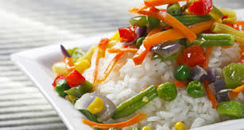
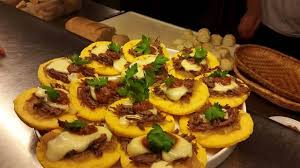
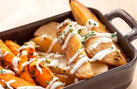
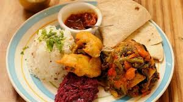
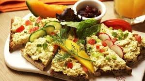
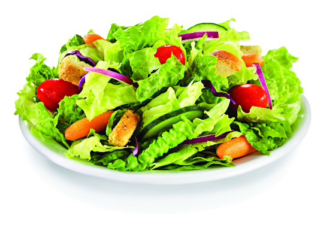
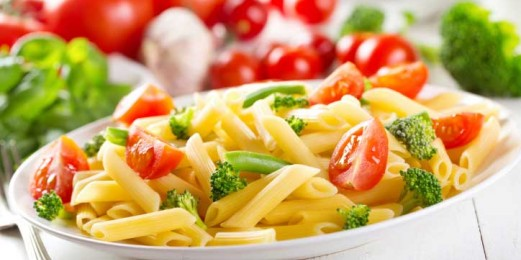

K-Gastro
Natural






Pastas Naturales
10 de diciembre

buena receta esta de lujo bien recomendada
buena receta esta de lujo bien recomendada
buena receta esta de lujo bien recomendada
Jugos Naturales tropiales
14 de diciembre

buena receta esta de lujo bien recomendada